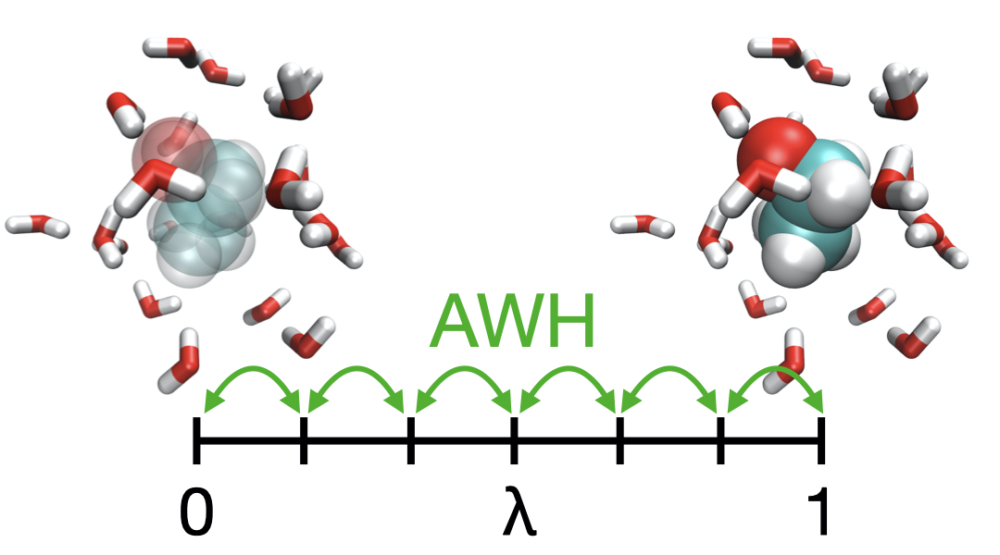

Applying the Accelerated Weight Histogram method to alchemical transformations¶

Alchemical transformations are regularly used to compute free energies of solvation, binding and mutation. The end states of interest are connected by a path using a coupling parameter lambda. The standard procedure is to run multiple simulations, each at a fixed value of lambda, and use Bennett’s acceptance ratio to obtain the free energy difference. The Accelerated Weight histogram method can be used for such calculations. In this approach lambda is varied dynamically in a single simulation, and the free energy difference can be obtained directly. This has been implemented in the GROMACS 2021 release and provides a simple and flexible way to compute alchemical free energies and can be trivially parallelized using multiple walkers (copies of the system).
Since GROMACS 2024 it is possible to automatically scale the AWH target distribution based on a local diffusion metric. This has been shown to improve the sampling efficiency of alchemical free energy calculations, sometimes as much as by an order of magnitude.
The application of AWH for solvation free energy calculation is available as on online GROMACS tuturial at: https://tutorials.gromacs.org/
Reference
M. Lundborg, J. Lidmar and B Hess doi:10.1063/5.0044352
V. Lindahl,J. Lidmar and B. Hess, “Riemann metric approach to optimal sampling of multidimensional free-energy landscapes”, Phys. Rev. E, 98, 023312 (2018) doi:10.1103/PhysRevE.98.023312.
M. Lundborg, J. Lidmar and B. Hess “On the Path to Optimal Alchemistry.”, Protein J. 42, 477-489 (2023). doi:10.1007/s10930-023-10137-1
Webinar
Applying the Accelerated Weight Histogram method to alchemical transformations